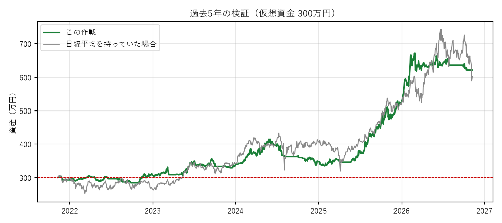

過去のデータでの検証
過去のデータで試した結果です。将来も同じになるとは限りません。
手数料（売買ごとに0.1%）と、注文が少し不利な値段で約定する分（0.1%）を差し引いています。
注意：企業の数字（ROE・PERなど）は「今の値」で会社を選んでいるため、過去の検証は実際より少し良く出る可能性があります。ニュースの判定は過去にさかのぼれないため、この検証には入っていません（毎日の仮想売買では使います）。
成績
| 開始資金 | 3,000,000円 |
|---|
| 現在の資産 | 6,196,343円 |
|---|
| 損益（税引前） | 3,196,343円 |
|---|
| 損益（税引後の目安） | 2,531,940円 |
|---|
| 利回り（税引前） | +106.5% |
|---|
| 年あたり利回り | +15.6% |
|---|
| 最大の落ち込み | -19.1% |
|---|
| 取引回数 | 140回 |
|---|
| 勝率 | 52% |
|---|
| 平均の勝ち | 74,966円 |
|---|
| 平均の負け | -33,973円 |
|---|
| プロフィットファクター | 2.40 |
|---|
| 払った手数料等 | 156,672円 |
|---|
| 税金の目安 | 664,403円 |
|---|
| 比較：日経平均を買って持っていた場合 | +100.7% |
|---|
| 対象になった会社数 | 10社 |
|---|

売買の記録（新しい順）
| 売った日 | 銘柄 | 株数 | 買値 | 売値 | 損益(円) | 理由 |
|---|
| 2026-10-15 | コマツ | 200 | 7,528 | 7,083 | -91,739 | 損切り |
| 2026-10-08 | みずほFG | 100 | 8,888 | 8,345 | -55,993 | 損切り |
| 2026-07-30 | みずほFG | 200 | 7,322 | 7,702 | +72,855 | 利益を守る売り(トレーリング) |
| 2026-06-11 | 住友電気工業 | 300 | 1,034 | 2,462 | +427,606 | 利益を守る売り(トレーリング) |
| 2026-04-27 | 日本郵船 | 100 | 5,161 | 5,564 | +39,235 | 利益を守る売り(トレーリング) |
| 2026-04-22 | 三井物産 | 100 | 2,925 | 5,667 | +273,311 | 利益を守る売り(トレーリング) |
| 2026-03-24 | 川崎重工業 | 200 | 2,397 | 2,938 | +107,217 | 利益を守る売り(トレーリング) |
| 2026-03-17 | 日本郵船 | 100 | 5,161 | 5,769 | +59,685 | 利益確定(半分) |
| 2026-03-04 | アステラス製薬 | 600 | 2,333 | 2,245 | -55,749 | 損切り |
| 2026-03-04 | 住友商事 | 500 | 1,221 | 1,454 | +115,380 | 利益を守る売り(トレーリング) |
| 2026-03-04 | 丸紅 | 200 | 2,786 | 5,314 | +503,890 | 利益を守る売り(トレーリング) |
| 2026-02-25 | みずほFG | 100 | 5,396 | 6,708 | +129,907 | 利益を守る売り(トレーリング) |
| 2026-01-28 | アステラス製薬 | 400 | 1,702 | 2,032 | +130,253 | 利益を守る売り(トレーリング) |
| 2026-01-20 | 川崎重工業 | 100 | 2,397 | 2,905 | +50,293 | 利益確定(半分) |
| 2026-01-13 | みずほFG | 100 | 5,396 | 6,369 | +96,060 | 利益確定(半分) |
| 2026-01-06 | 住友商事 | 500 | 1,221 | 1,371 | +73,942 | 利益確定(半分) |
| 2025-11-25 | アステラス製薬 | 300 | 1,702 | 1,925 | +65,654 | 利益確定(半分) |
| 2025-11-19 | みずほFG | 200 | 5,141 | 4,922 | -45,950 | 損切り |
| 2025-11-07 | ソフトバンクグループ | 200 | 2,015 | 5,229 | +641,426 | 利益を守る売り(トレーリング) |
| 2025-11-05 | アステラス製薬 | 700 | 1,678 | 1,609 | -50,789 | 損切り |
| 2025-11-05 | みずほFG | 200 | 5,003 | 4,768 | -48,998 | 損切り |
| 2025-11-04 | 住友商事 | 1000 | 1,082 | 1,079 | -4,810 | 損切り |
| 2025-10-29 | コマツ | 100 | 5,710 | 5,460 | -26,080 | 損切り |
| 2025-10-29 | 住友電気工業 | 300 | 1,034 | 1,210 | +52,131 | 利益確定(半分) |
| 2025-10-14 | みずほFG | 100 | 4,573 | 4,554 | -2,833 | 損切り |
| 2025-09-29 | アステラス製薬 | 200 | 1,410 | 1,541 | +25,654 | 利益を守る売り(トレーリング) |
| 2025-09-22 | 日本郵船 | 200 | 5,190 | 4,974 | -45,339 | 損切り |
| 2025-09-08 | 住友商事 | 100 | 936 | 1,046 | +10,775 | 利益確定(半分) |
| 2025-08-25 | 三井物産 | 100 | 2,925 | 3,268 | +33,600 | 利益確定(半分) |
| 2025-08-15 | 川崎重工業 | 400 | 1,819 | 1,979 | +62,457 | 利益を守る売り(トレーリング) |
| 2025-08-13 | アステラス製薬 | 100 | 1,410 | 1,575 | +16,277 | 利益確定(半分) |
| 2025-08-08 | 丸紅 | 100 | 2,786 | 3,111 | +31,873 | 利益確定(半分) |
| 2025-07-29 | コマツ | 100 | 4,294 | 4,836 | +53,271 | 利益を守る売り(トレーリング) |
| 2025-07-23 | コマツ | 100 | 4,294 | 4,972 | +66,932 | 利益確定(半分) |
| 2025-07-02 | 住友電気工業 | 800 | 768 | 729 | -31,935 | 損切り |
| 2025-06-24 | ソフトバンクグループ | 200 | 2,015 | 2,302 | +56,472 | 利益確定(半分) |
| 2025-04-04 | 川崎重工業 | 300 | 1,318 | 1,575 | +76,326 | 利益を守る売り(トレーリング) |
| 2025-03-06 | 川崎重工業 | 200 | 1,318 | 1,710 | +77,796 | 利益確定(半分) |
| 2025-03-05 | コマツ | 200 | 4,211 | 4,036 | -36,623 | 損切り |
| 2025-03-05 | みずほFG | 100 | 3,054 | 3,901 | +83,998 | 利益を守る売り(トレーリング) |
| 2025-01-27 | 住友電気工業 | 1100 | 726 | 687 | -45,356 | 損切り |
| 2025-01-14 | 日本郵船 | 100 | 4,655 | 4,492 | -17,270 | 上昇トレンドが崩れた |
| 2025-01-10 | 住友商事 | 1100 | 794 | 771 | -26,754 | 上昇トレンドが崩れた |
| 2024-12-25 | 住友電気工業 | 700 | 616 | 650 | +22,827 | 利益を守る売り(トレーリング) |
| 2024-12-19 | ソフトバンクグループ | 300 | 2,414 | 2,256 | -48,866 | 損切り |
| 2024-12-19 | 川崎重工業 | 600 | 1,320 | 1,199 | -73,642 | 損切り |
| 2024-11-27 | 三井物産 | 200 | 3,144 | 2,976 | -34,620 | 損切り |
| 2024-11-21 | 住友電気工業 | 700 | 616 | 708 | +63,245 | 利益確定(半分) |
| 2024-11-19 | 川崎重工業 | 600 | 1,300 | 1,197 | -63,345 | 損切り |
| 2024-11-15 | みずほFG | 100 | 3,054 | 3,435 | +37,455 | 利益確定(半分) |
| 2024-11-13 | コマツ | 200 | 4,044 | 3,856 | -39,206 | 損切り |
| 2024-11-05 | ソフトバンクグループ | 300 | 2,360 | 2,212 | -45,751 | 損切り |
| 2024-11-05 | アステラス製薬 | 500 | 1,652 | 1,566 | -44,711 | 損切り |
| 2024-10-24 | 川崎重工業 | 200 | 1,243 | 1,115 | -25,989 | 損切り |
| 2024-10-08 | 日本郵船 | 100 | 4,729 | 4,445 | -29,299 | 損切り |
| 2024-08-05 | アステラス製薬 | 500 | 1,568 | 1,502 | -34,603 | 損切り |
| 2024-07-25 | コマツ | 200 | 4,444 | 4,201 | -50,248 | 損切り |
| 2024-07-25 | みずほFG | 300 | 3,169 | 3,056 | -35,927 | 損切り |
| 2024-07-24 | 川崎重工業 | 700 | 1,254 | 1,148 | -76,455 | 損切り |
| 2024-07-24 | 丸紅 | 300 | 2,865 | 2,737 | -40,101 | 損切り |
| 2024-07-19 | 住友商事 | 200 | 954 | 914 | -8,350 | 損切り |
| 2024-07-12 | 川崎重工業 | 800 | 1,175 | 1,098 | -63,704 | 損切り |
| 2024-07-01 | 住友電気工業 | 1000 | 445 | 575 | +128,792 | 利益を守る売り(トレーリング) |
| 2024-06-20 | 川崎重工業 | 500 | 648 | 1,055 | +202,659 | 利益を守る売り(トレーリング) |
| 2024-06-17 | コマツ | 100 | 4,303 | 4,029 | -28,273 | 損切り |
| 2024-06-14 | みずほFG | 300 | 2,820 | 2,802 | -7,074 | 損切り |
| 2024-06-05 | 三井物産 | 100 | 3,286 | 3,567 | +27,401 | 利益を守る売り(トレーリング) |
| 2024-05-30 | 住友商事 | 500 | 844 | 920 | +37,522 | 利益を守る売り(トレーリング) |
| 2024-05-21 | 三井物産 | 100 | 3,286 | 3,861 | +56,711 | 利益確定(半分) |
| 2024-05-10 | 丸紅 | 100 | 2,444 | 2,830 | +38,131 | 利益確定(半分) |
| 2024-04-30 | 住友商事 | 500 | 844 | 979 | +66,870 | 利益確定(半分) |
| 2024-04-26 | コマツ | 200 | 4,084 | 3,825 | -53,397 | 損切り |
| 2024-04-01 | 住友商事 | 100 | 852 | 814 | -4,004 | 損切り |
| 2024-04-01 | ソフトバンクグループ | 400 | 2,306 | 2,173 | -55,010 | 損切り |
| 2024-03-14 | みずほFG | 200 | 2,428 | 2,637 | +40,832 | 利益を守る売り(トレーリング) |
| 2024-03-12 | 住友商事 | 100 | 806 | 773 | -3,517 | 損切り |
| 2024-03-12 | 三井物産 | 100 | 2,904 | 2,845 | -6,395 | 損切り |
| 2024-03-11 | 丸紅 | 100 | 2,337 | 2,230 | -11,238 | 損切り |
| 2024-03-11 | コマツ | 200 | 3,757 | 3,786 | +4,319 | 利益を守る売り(トレーリング) |
| 2024-03-07 | みずほFG | 100 | 2,428 | 2,718 | +28,537 | 利益確定(半分) |
| 2024-03-05 | 日本郵船 | 100 | 3,553 | 3,994 | +43,316 | 利益を守る売り(トレーリング) |
| 2024-02-22 | 住友電気工業 | 900 | 445 | 498 | +46,497 | 利益確定(半分) |
| 2024-02-16 | 川崎重工業 | 500 | 648 | 726 | +38,320 | 利益確定(半分) |
| 2024-01-05 | 日本郵船 | 100 | 3,553 | 4,134 | +57,402 | 利益確定(半分) |
| 2023-12-08 | 住友商事 | 1100 | 729 | 694 | -40,090 | 損切り |
| 2023-10-04 | みずほFG | 300 | 2,211 | 2,216 | +200 | 利益を守る売り(トレーリング) |
| 2023-10-03 | 住友電気工業 | 2000 | 410 | 392 | -35,957 | 損切り |
| 2023-10-03 | 三井物産 | 200 | 2,584 | 2,458 | -26,345 | 上昇トレンドが崩れた |
| 2023-10-02 | 住友商事 | 1200 | 680 | 673 | -10,459 | 損切り |
| 2023-09-29 | 日本郵船 | 100 | 2,938 | 3,375 | +43,049 | 利益を守る売り(トレーリング) |
| 2023-09-15 | コマツ | 100 | 3,374 | 3,896 | +51,489 | 利益確定(半分) |
| 2023-08-17 | みずほFG | 200 | 1,836 | 1,991 | +30,141 | 利益を守る売り(トレーリング) |
| 2023-08-08 | 日本郵船 | 100 | 2,938 | 3,317 | +37,330 | 利益確定(半分) |
| 2023-08-04 | 丸紅 | 300 | 2,266 | 2,155 | -34,851 | 損切り |
| 2023-08-04 | 住友電気工業 | 2000 | 407 | 389 | -38,299 | 損切り |
| 2023-08-01 | 三井物産 | 200 | 2,543 | 2,436 | -22,447 | 損切り |
| 2023-07-14 | 川崎重工業 | 400 | 608 | 650 | +16,048 | 利益を守る売り(トレーリング) |
| 2023-07-13 | 住友商事 | 700 | 539 | 641 | +70,291 | 利益を守る売り(トレーリング) |
| 2023-07-12 | 住友電気工業 | 2100 | 394 | 382 | -27,842 | 上昇トレンドが崩れた |
| 2023-07-10 | 三井物産 | 200 | 1,989 | 2,332 | +67,802 | 利益を守る売り(トレーリング) |
| 2023-07-05 | みずほFG | 200 | 1,836 | 2,053 | +42,602 | 利益確定(半分) |
| 2023-07-03 | 川崎重工業 | 300 | 608 | 725 | +34,529 | 利益確定(半分) |
| 2023-06-21 | アステラス製薬 | 400 | 1,869 | 1,911 | +15,157 | 利益を守る売り(トレーリング) |
| 2023-06-12 | 丸紅 | 100 | 1,776 | 1,999 | +21,870 | 利益確定(半分) |
| 2023-06-07 | 三井物産 | 100 | 1,989 | 2,229 | +23,578 | 利益確定(半分) |
| 2023-06-01 | 川崎重工業 | 700 | 573 | 546 | -20,333 | 損切り |
| 2023-05-23 | 住友商事 | 700 | 539 | 602 | +42,890 | 利益確定(半分) |
| 2023-05-10 | 川崎重工業 | 1300 | 569 | 545 | -32,339 | 損切り |
| 2023-03-14 | 三井物産 | 400 | 1,804 | 1,775 | -13,159 | 損切り |
| 2023-03-14 | コマツ | 200 | 2,801 | 2,797 | -1,822 | 損切り |
| 2023-03-14 | 丸紅 | 300 | 1,386 | 1,567 | +53,233 | 利益を守る売り(トレーリング) |
| 2023-03-13 | 住友商事 | 100 | 530 | 508 | -2,310 | 損切り |
| 2023-03-13 | 川崎重工業 | 1400 | 562 | 533 | -42,256 | 損切り |
| 2023-03-13 | みずほFG | 300 | 1,460 | 1,818 | +106,412 | 利益を守る売り(トレーリング) |
| 2023-02-09 | 丸紅 | 200 | 1,386 | 1,551 | +32,373 | 利益確定(半分) |
| 2023-02-03 | 住友商事 | 1500 | 504 | 483 | -33,373 | 損切り |
| 2023-01-05 | 川崎重工業 | 600 | 579 | 549 | -18,625 | 損切り |
| 2023-01-04 | 丸紅 | 500 | 1,250 | 1,296 | +21,499 | 利益を守る売り(トレーリング) |
| 2023-01-04 | 住友商事 | 800 | 431 | 472 | +31,738 | 利益を守る売り(トレーリング) |
| 2023-01-04 | 三井物産 | 200 | 1,568 | 1,689 | +23,611 | 利益を守る売り(トレーリング) |
| 2022-12-27 | みずほFG | 200 | 1,460 | 1,631 | +33,581 | 利益確定(半分) |
| 2022-12-19 | コマツ | 200 | 2,731 | 2,617 | -23,995 | 損切り |
| 2022-11-16 | 三井物産 | 200 | 1,568 | 1,751 | +36,004 | 利益確定(半分) |
| 2022-11-11 | 住友商事 | 800 | 431 | 482 | +40,044 | 利益確定(半分) |
| 2022-09-28 | みずほFG | 500 | 1,360 | 1,359 | -1,777 | 利益を守る売り(トレーリング) |
| 2022-09-26 | 住友電気工業 | 2100 | 335 | 340 | +10,055 | 利益を守る売り(トレーリング) |
| 2022-09-01 | ソフトバンクグループ | 500 | 1,442 | 1,335 | -54,996 | 損切り |
| 2022-08-16 | 川崎重工業 | 1400 | 491 | 466 | -36,668 | 損切り |
| 2022-08-09 | ソフトバンクグループ | 500 | 1,380 | 1,307 | -38,104 | 損切り |
| 2022-06-20 | 川崎重工業 | 800 | 437 | 469 | +25,374 | 利益を守る売り(トレーリング) |
| 2022-06-06 | 川崎重工業 | 800 | 437 | 534 | +76,849 | 利益確定(半分) |
| 2022-06-02 | アステラス製薬 | 400 | 1,771 | 1,695 | -31,784 | 損切り |
| 2022-05-10 | 三井物産 | 400 | 1,477 | 1,400 | -31,656 | 損切り |
| 2022-04-27 | コマツ | 200 | 2,534 | 2,404 | -27,135 | 損切り |
| 2022-04-27 | 川崎重工業 | 1700 | 435 | 402 | -56,961 | 損切り |
| 2022-04-07 | 住友商事 | 1000 | 354 | 418 | +63,843 | 利益を守る売り(トレーリング) |
| 2022-03-03 | 住友商事 | 1000 | 354 | 400 | +45,844 | 利益確定(半分) |
| 2022-01-19 | 日本郵船 | 300 | 1,944 | 1,850 | -29,454 | 損切り |
| 2021-12-01 | 三井物産 | 600 | 1,145 | 1,083 | -38,752 | 損切り |
| 2021-11-30 | 住友電気工業 | 2100 | 343 | 327 | -34,476 | 損切り |